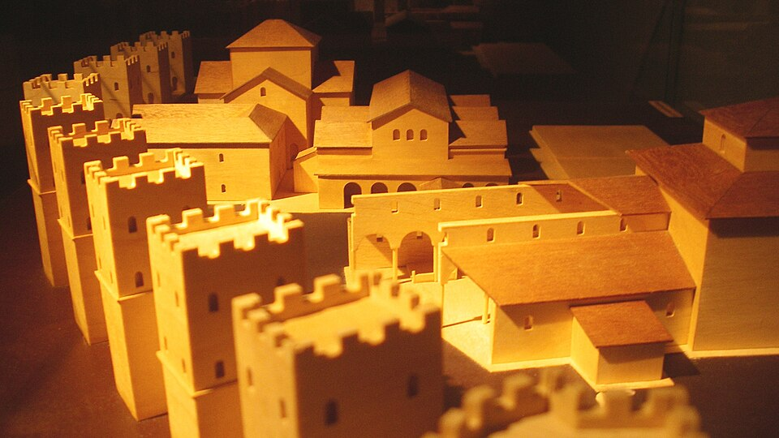
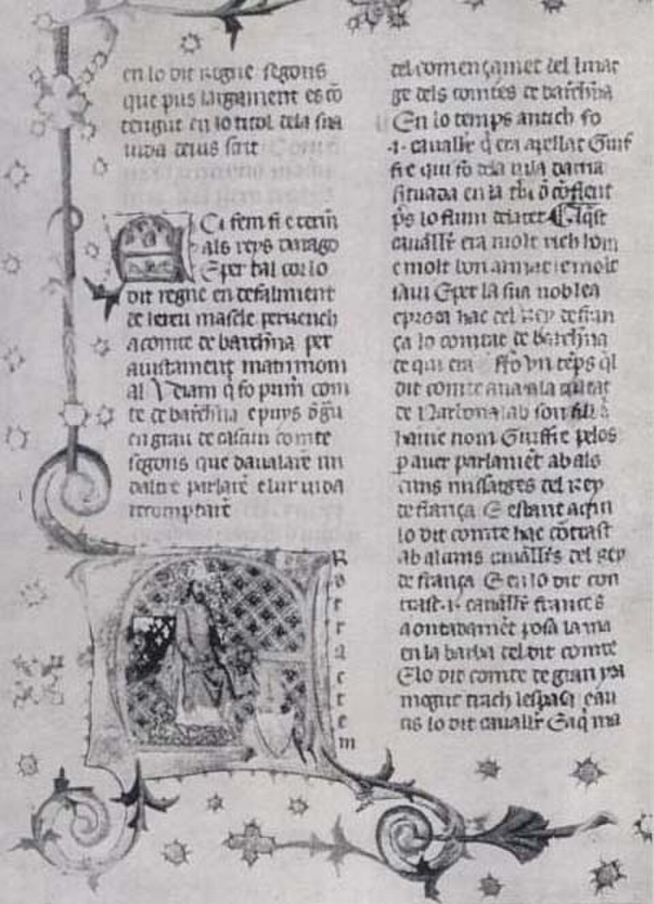
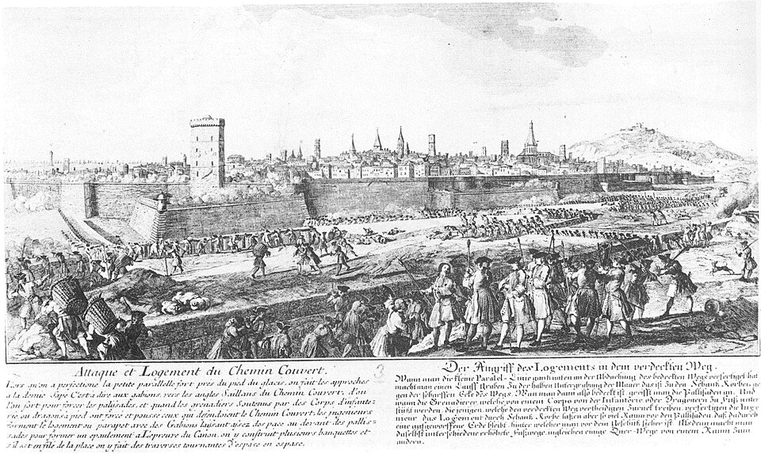

II a.C.
II a.C.
Fundació Romana
Els orígens de Bàrcino sota l'Imperi Romà i el naixement de la ciutat.
Saber mésUn viatge a través dels segles des de la fundació romana fins a la ciutat contemporània.
Vuit períodes clau que han donat forma a la Barcelona actual
II a.C.
Els orígens de Bàrcino sota l'Imperi Romà i el naixement de la ciutat.
Saber més
V d.C.La caiguda de l'Imperi i el domini visigot a Barcinona.
Saber més VIII d.C.
VIII d.C.
Barshiluna sota el domini d'Al-Àndalus i la influència islàmica.
Saber més
XII d.C.La consolidació del Comtat i el naixement de la Corona d'Aragó.
Saber més XV d.C.
XV d.C.
L'apogeu comercial i cultural de la Barcelona medieval.
Saber més
XVIII d.C.L'impacte de la Guerra de Successió i els Decrets de Nova Planta.
Saber mésLa transformació amb la Revolució Industrial i l'Eixample de Cerdà.
Saber més XX d.C.
XX d.C.
Del Modernisme als Jocs Olímpics del 92: una ciutat reinventada.
Saber mésOpinions d'usuaris sobre aquest viatge per la història de Barcelona
Una web fantàstica per aprendre la història de Barcelona de manera visual i ben estructurada.
Molt útil per a estudiants d'història. M'ha agradat especialment la navegació cronològica.
Bona iniciativa! La informació és clara i ben presentada. Ideal per a una primera aproximació.